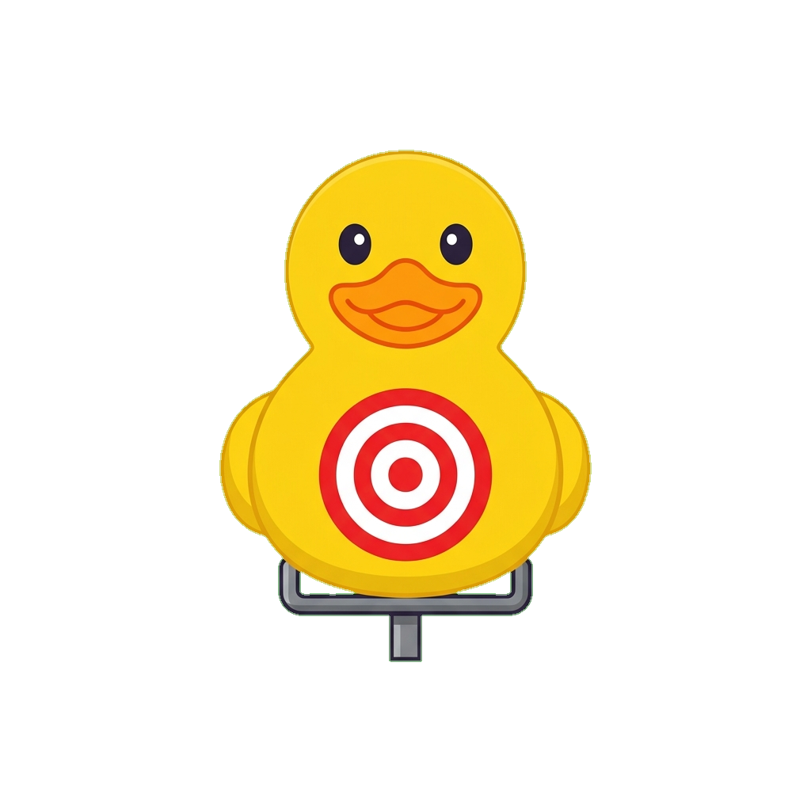

Mire com os olhos e atire com uma piscada!

Para que sua mira funcione corretamente, precisamos calibrar o rastreamento dos seus olhos. Você verá pontos aparecerem nos cantos da tela.
Olhe fixamente para cada ponto por alguns segundos. A calibração acontecerá automaticamente.